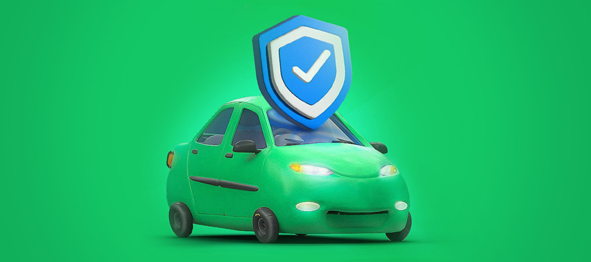

شناسایی و پیگیری «انحراف از مسیر»، قابلیت امنیتی جدید اپلیکیشن اسنپ
۲۷ آذر ۱۴۰۳
چرا امتیازدهی دقیق شما کیفیت سفرهای اسنپ را بهتر میکند؟
۳ مهر ۱۴۰۳
روند تأیید صلاحیت و نظارت بر عملکرد کاربران رانندهی اسنپ
۲۸ مرداد ۱۴۰۳

افزایش امنیت کاربران راننده اسنپ با سرویس «امنیت سفر»
۲۷ خرداد ۱۴۰۳